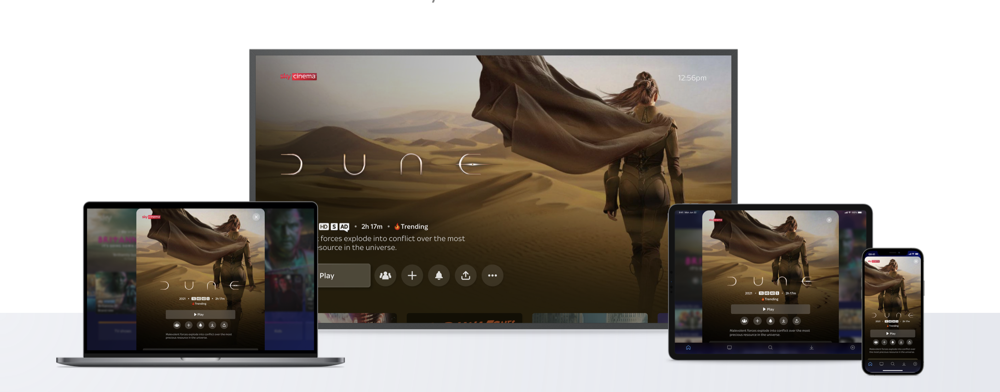
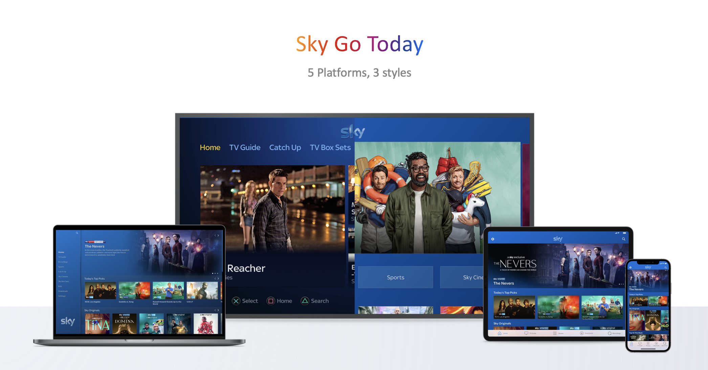
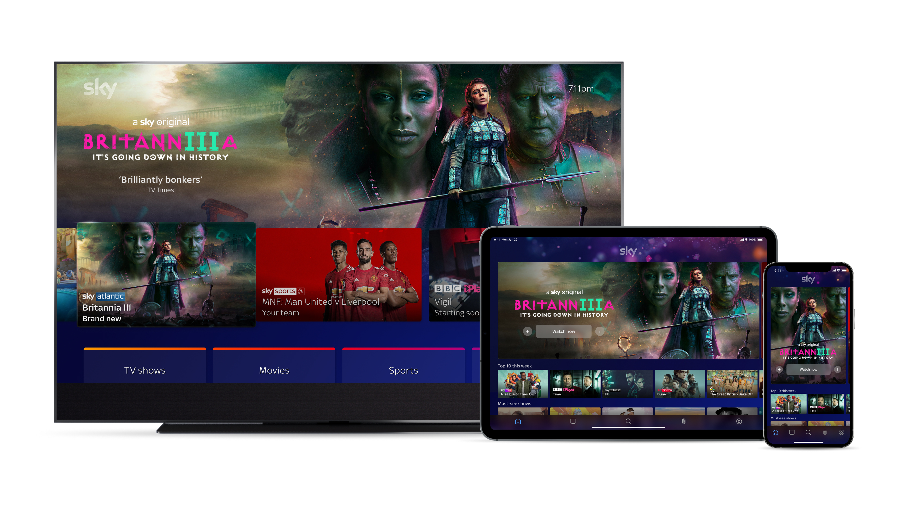
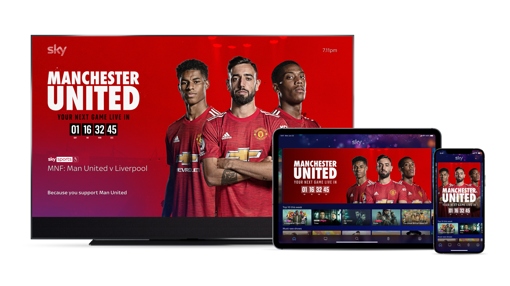

Case Study · 03 · Sky Glass / Sky Go
Aligning Sky Glass and Sky Go into a single coherent experience
The Context
Sky Go started life as the companion app to Sky Q, the app you used when you weren't in front of your TV. It worked well in that role precisely because Sky Q defined the primary experience and Sky Go followed its lead.
Then came Sky Glass. Positioned as the new flagship streaming product and the long-term replacement for Sky Q, Sky Glass brought a bold new visual identity, a new brand language and a fundamentally different design philosophy. It was a significant step forward for the primary experience. But it made the disconnect with Sky Go significantly worse.
Sky Go was still visually and functionally anchored to Sky Q. As Sky Glass moved the flagship experience in a new direction, the companion app fell further behind, not just aesthetically, but in terms of how it positioned itself relative to the primary product. What had once felt like a natural extension of the living room now felt like a different product entirely.
"The question wasn't just how to make Sky Go look more like Sky Glass. It was how to redefine what a companion app means when the primary product has fundamentally changed."
My Role
I led the design exploration for this initiative, working across both the Sky Glass and Sky Go products to identify the friction points, the visual inconsistencies, and the strategic opportunities that a more unified approach could unlock.
The Challenge
Sky Glass had been designed from the ground up as a premium TV experience. Sky Go had evolved over many years, shaped by different teams, different constraints and different moments in time. The result was two products that shared a logo but little else.
Colour usage, typography, motion behaviour and content hierarchy differed significantly between the two platforms. A customer moving between Glass and Go encountered a jarring shift in tone, one polished and intentional, one functional but inconsistent.
Sky's global ambitions required a design system that could travel. A fragmented multi-platform experience was hard to syndicate, hard to maintain, and harder to sell. Unification wasn't just a design nicety, it was a business imperative.

Sky Go at the start of the project: 5 platforms, 3 distinct visual styles, with no coherent design language to hold them together.


The Approach
Rather than starting with components, I started with principles. What did a unified Sky feel like? What should be consistent across every screen, and what should adapt to the context, the ten-foot TV experience versus the handheld, on-the-go moment?
Impact
This project was the beginning of a much larger initiative. The design explorations and strategic framing created alignment across product, engineering and brand teams, and laid the groundwork for a more connected Sky ecosystem.
01
A shared design language between Glass and Go
For the first time, both platforms were being designed from a common set of principles, visual, interaction and editorial, giving teams a shared foundation to build from.
02
Sky Glass UI patent holder
My work on Sky Glass resulted in a patent for the UI design, a product now globally syndicated across multiple continents, including North America and Australia.
03
Foundation for global scale
The unified approach created patterns and thinking that could travel, reducing the friction of bringing the Sky experience to new markets and making syndication significantly more achievable.
04
Stakeholder alignment across the business
The presentation and design explorations were used to build a shared vision across product, brand and engineering teams, creating the internal momentum needed to take the work further.
Reflection